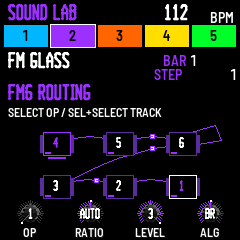
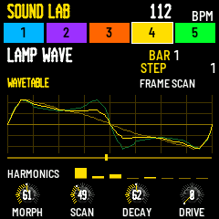
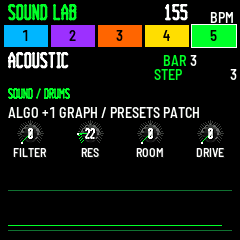
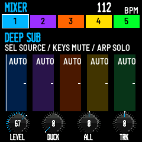
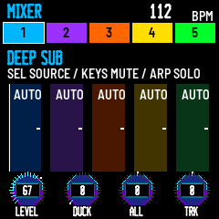
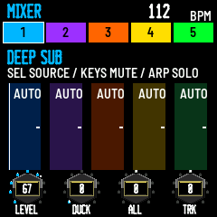
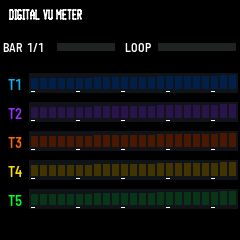
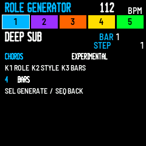
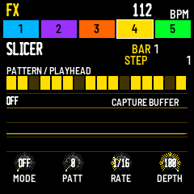
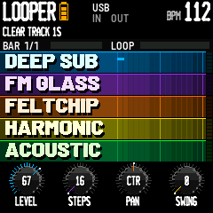

SLAP-5 v0.1.54
A five-track groovebox for the M-VAVE FM-1 with four melodic tracks, a drum track and sixteen shared voices.
Install on FM-1 · Open SLAP Studio · Open the FM-1 simulation
Performance controls
- HOME opens the looper. Press again for visualizers. SELECT chooses a track.
- HOME K1–K4 adjust level, pattern length, stereo pan and swing.
- Tap REC to start or finish a take. Recording preferences set overdub or replace and count-in behavior.
- On HOME, hold REC + OCT− for two seconds to clear the selected track. Hold REC + OCT+ for five seconds to reset the working song. Release early to cancel. Saved songs and system preferences remain available.
- Tap EDIT for Sound Lab. Hold EDIT for one second for MIXER.
- MIXER K1–K4 adjust level, duck, all-track filter and selected-track filter. ARP toggles solo, and SELECT + K2 changes the duck source.
- In SETTINGS → DISPLAY, use SELECT to highlight KNOB THEME and turn K1.
Sound and connectivity
25 synthesis engines, 128 factory patches, 25 factory drum kits with 16 sounds each, 16/32/64-step patterns, LIVE FX, SLICER and USB audio/MIDI. The firmware uses 256-frame audio callbacks and a 240×240 RGB565 display. Studio runs the matching firmware source in a browser simulation.
Firmware gallery
240×240 captures from the v0.1.54 firmware host renderer.













Using the FM-1
Use a USB data cable and close other MIDI apps before connecting. Check the project backup and firmware identity before installing. If the browser cannot connect, verify USB MIDI access and use the download link with the desktop flasher if needed.
Release notes
v0.1.54 tests startup compression of the application’s RAM load images to recover flash without replacing the bootloader or changing project storage.
Stop transport, select a melodic track, press SEQ twice and use K1 role, K2 style and K3 bars. SEL generates an editable phrase, and asks for a second press before replacing existing events. The generator offers 22 style presets and follows the track key and scale. HOME lanes are darker, and green battery outline means USB power with charge level unknown.
v0.1.53 added layered dial surfaces, stronger metallic bevels, cyan/magenta Neon segments and a framed Segmented readout. HOME notes pass behind the track names and scroll off the left edge. Browser updates allow compatible SLAP-5 v0.1.31 and v0.1.37–v0.1.53 directly. Choose under SETTINGS → DISPLAY → KNOB THEME.
FX inspection now follows active track FX and samples the visible track. Rendering uses a 20 FPS cap with coalescing under load. HOME gains a dotted playhead, vertical battery gauge and a clearer tempo and shortcut header. The Dancer follows the transport beat with a bounded bass accent. K1 toggles bass response, K2 changes the beat division and pose stride, K3 toggles subtle sway, and K4 toggles club lights. HOME K2 queues live length changes for the next measure. GEN DRUM writes finite editable 16-, 32-, or 64-step patterns.